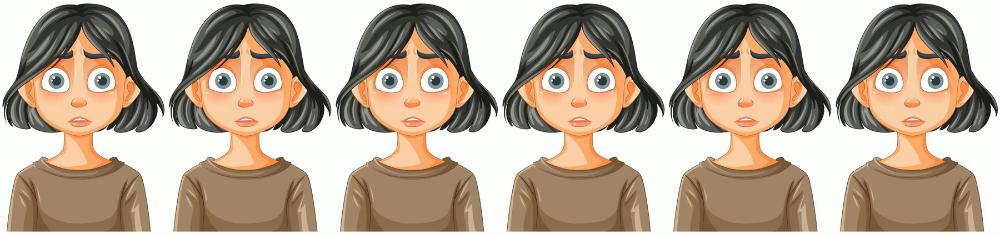

🪞 DrawFace Live
웹캠 표정을 캐릭터가 실시간으로 따라 합니다 — 그림 종류가 엔진을 고릅니다. 모든 웹 데모는 브라우저 안에서만 처리되고 영상은 어디로도 전송되지 않습니다.
🎨 그래픽 아바타 웹에서 바로
소년 캐릭터가 눈·입·미소를 따라 합니다. 벡터 입 + WebGL 얼굴 워핑 — talking-drawing-avatar 의 렌더 코어 그대로.
체험하기 →🖼 초상화 · 일러스트 로컬 GPU

표준 비율 일러스트·실사·명화는 LivePortrait(TensorRT)로 30fps 실시간 —
벌린 입 원본도 자연스럽게 다뭅니다. GPU가 필요해 로컬 전용:
~/FasterLivePortrait/live.sh 그림.jpg
🗿 석고상 (3D) 로컬 전용
NVIDIA A2F mark 헤드(ARKit 52채널 모프타깃)가 표정을 따라 합니다.
헤드 모델이 NVIDIA 파생물이라 공개 배포 대신 로컬에서:
localhost:8000/head (자매 리포 talking-drawing-avatar 서버)